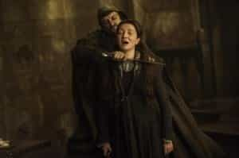

Michael is the author of Staying Married in a Degenerate Age. Follow him on Twitter or Facebook. You can read more of his writing at Honor and Daring.


As the new season of the HBO series Game of Thrones got underway, I noticed that all of the Social Justice Warriors on my social media were really excited about the new season. It seems like an odd fit given that Game of Thrones seems to stand for almost the exact opposite of what SJWs profess to believe. What does their fondness for the series tell us about their real beliefs?

Joffrey Baratheon—The SJW as King
The story of Game of Thrones takes place in a medieval-like fantasy world. As the title of the series suggests, it is about the cloak and dagger political machinations that take place as various noble families vie to gain control of the throne of the fictional country of Westeros.
SJWs profess to be staunch defenders of democracy so it is strange that they love a show that is all about royalty. For SJWs, the popular will trumps all authority. They are constantly at work trying to expand the voting franchise when it comes to people who will vote for their candidates. For example, the Democrat governor of Virginia Terry McAuliffe recently signed an order which will give felons the right to vote—perhaps because he believes that the criminals will recognize Hillary as one of their own and vote for her in November.
But their love of Game of Thrones reveals that SJWs really love the pomp and circumstance that accompanies monarchy. This is what is behind their incessant praise of Obama’s vaunted intellect, Michelle’s great beauty, and how the Obamas have brought “class” (an undemocratic concept) to DC.
SJW might give democracy lip service but not even the biggest left winger can get excited about the will of ignorant people whose philosophy boils down to YOLO (you only live once).
https://www.youtube.com/watch?v=YEIGl8LP278

Game of Thrones is almost exclusively about the nobility. In the books on which the series is based, the common people are called “small folk.” The are a few characters who are of low birth, but they play relatively small roles.
Again, SJWs profess to be against any sort of hereditary aristocracy. On paper, they oppose class distinctions and celebrate “the poor.” In practice though, they are very class conscious and if they are already in the upper class, they take steps to ensure that their children remain there.
SJWs do this in several ways. They support progressive taxation that prevents others from bettering their station. While wealthy SJWs celebrate single motherhood and deviant relationships for the lower classes, they themselves engage in traditional marriage. They always try to marry upward. They send their children to private schools attended by children of the upper class. Meanwhile, they take action to ensure that your children will attend school with children from the lower class.
By taking these actions, SJWs have created a new aristocracy in everything but name. The only difference is that it is an aristocracy of the worst rather than best elements of society.

Game of Thrones is notorious for its violent scenes. In the infamous “red wedding” scene of a couple of seasons ago, the young king Rob Stark and his mother are tricked into attending a wedding of a professed ally, Lord Walder Frey. But Lord Frey has allied himself with the Starks’ enemy and the wedding is just a ruse to get the Starks to drop their guard. The wedding ends with Rob Stark being shot through with arrows and his mother’s throat being slit—all graphically portrayed, of course.
In the Game of Thrones universe, violence is how things get done. The series has been filled with wars and murder. It is fair to say the philosophy of the series can be boiled down to the 48 Laws of Power maxim: “Crush your enemy totally.”
The violence of Game of Thrones stands in contrast to SJWs’ stated goal of making the country less violent. SJWs push for gun control. They lobby for special laws that protect only certain groups such as the “Violence Against Women Act.” SJWs claim to be anti-war.
SJWs may be “personally opposed” to violence but they have no problem with using the government, which they control, to violently crush anyone who the SJWs don’t like. One SJW acquaintance expressed glee in the hope that the recent Ammon Bundy stand off in Oregon would end in a Waco-like slaughter of the protestors because they were conservative white men.
When it comes to ruthlessness, no one exceeds SJWs. Traditional men want the punishment to fit the crime, but SJWs are willing to use even outrageously excessive measures to remove their enemies. If that means wholesale slaughter of their perceived enemies, SJWs are willing to do it.

The Game of Thrones fantasy world is, like the Middle Ages, dominated by faith. Unlike the Middle Ages, most of the ruling elite in Game of Thrones are atheists. Like many GOP politicians, they only use religion as a tool to fool their subjects.
SJWs identify with the ruling class in Game of Thrones. SJWs view religion as something that is backward and only suitable for simpletons, the emotionally weak, and the uneducated. Meanwhile, SJWs see themselves as being too intelligent to subscribe to what they believe to be fables. Rather, they worship at the altar of Science. It doesn’t seem to bother them that the extent of their scientific knowledge comes from watching the Daily Show.

On the surface there is a conflict between the diversity that SJWs champion, and the homogeneity of the world of Game of Thrones. The land of Westeros is almost entirely white. All the nonwhites live in the free cities that can only be reached by sea. Still, there are some characters that cater to the SJW diversity fetish.
One of these characters is Daenerys Targaryen, the white haired princess of Westeros who lives in a foreign land. Daenerys becomes the ruler of these lands by freeing the slaves of that land, which in HBO’s interpretation are mostly nonwhite. In one cloying scene, the grateful ex-slaves adore Daenerys by carrying her aloft and chanting “Mhysa” or “mother.”
Every racial group has its share of SJWs, but most SJWs are white people who live in largely white enclaves. True, they may have a token nonwhite friend but for the most part SJWs resemble the all-white cast of Girls or the staff of liberal news site Vox. By favoring maternalistic welfare programs, SJWs see themselves as Daenerys, ruling the nonwhite masses from a lofty perch
.
There’s a reason that the ultra-liberal HBO network produced the Game of Thrones series—it is a perfect mirror into how SJWs view themselves. They are engaged in a ruthless game of strategy in a quest for unadulterated power. For too long, traditional men have been as “innocent as doves.” It is time that we become “as wise as serpents” and begin thinking strategically as well.
Read More: What Game of Thrones Says About Morality And Necessity